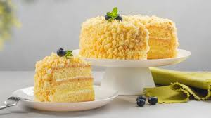

All Recipes
Qabuli Plaw
Kabuli pulao is the Afghan national dish. Unmistakable in its appearance with its glistening
carrots and large tender chunks of lamb, Kabuli pulao is an unforgettable dish.
Manto
Afghani Mantoo (Mandy, mantu or manti) are also known as the dumplings of the Silk Road.
It is believed they originated from the Mongol Empire and made their way into the local cuisine of the Afghan and Turkish people.
Cake
This simple cake recipe was sent home from our children's school. It is the easiest, best-tasting cake I've ever made.
It's great to make with the kids, especially for cupcakes. Use your favorite frosting on top of this delicious cake.
Refreshing Juse
Start your day with a freshly blended juice or smoothie.
Our refreshing drinks recipes are packed with fruit and veg, delivering a feelgood vitamin